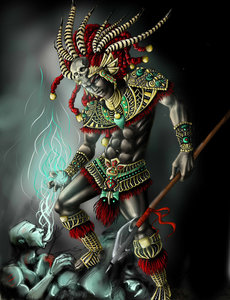
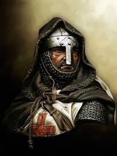
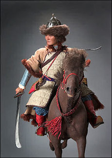
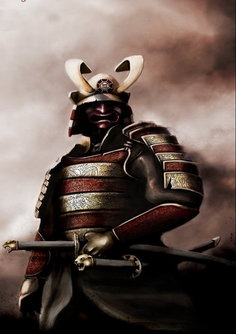
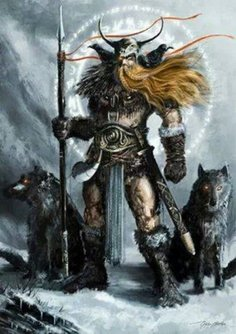
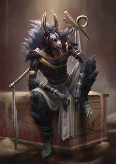
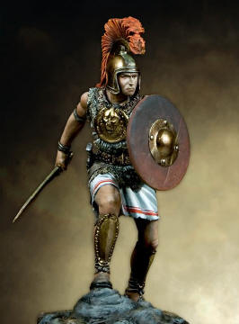

The Maya people are a group of Indigenous peoples of Mesoamerica. They inhabit southern Mexico, Guatemala, Belize, El Salvador and Honduras. The overarching term "Maya" is a collective designation to include the peoples of the region that share some degree of cultural and linguistic heritage; however, the term embraces many distinct populations, societies, and ethnic groups that each have their own particular traditions, cultures, and historical identity.
Special Ability: Curse

Aztec
The Mexica Aztec Empire or the Triple Alliance began as an alliance of three Nahua "altepetl" city-states: Mexico-Tenochtitlan, Texcoco, and Tlacopan. These three city-states ruled the area in and around the Valley of Mexico until they were defeated by the combined forces of the Spanish conquistadores and their native allies under Hernán Cortés .
Special Ability: Poison Spread

Crusader
The Crusades were a series of intermittent military campaigns sanctioned by various Popes in the Middle Ages. Byzantine Emperor Alexios I sent an ambassador from Constantinople to Pope Urban II in Italy requesting military support in the conflict with the eastward invading Turks. The Pope responded promptly by calling Catholic soldiers to join the First Crusade. The immediate goal was to guarantee pilgrims access to the holy sites in the Holy Land that were under Muslim control.
Special Ability: Sacred Light

Hun
The Huns were a nomadic group of people who are known to have lived in Eastern Europe, the Caucasus, and Central Asia between the 1st century AD and the 7th century. They were first reported living east of the Volga River, in an area that was part of Scythia at the time; the Huns' arrival is associated with the migration westward of a Scythian people, the Alans.They were first mentioned as Hunnoi by Tacitus. In 91 AD, the Huns were said to be living near the Caspian Sea .
Special Ability: Spectral Riders

Samurai
" They serve in close attendance to the nobility ".Samurai (侍) were the military-nobility and officer-caste of medieval and early-modern Japan.
In Japanese, they are usually referred to as bushi (武士) or buke (武家).
Special Ability: A Thousand Cuts

Viking
Vikings (Norwegian and Danish: Vikinger; Swedish and Nynorsk: Vikingar; Icelandic: Víkingar), from Old Norse víkingr, were Germanic Norse seafarers, speaking the Old Norse language, who raided and traded from their Scandinavian homelands across wide areas of northern and central Europe, as well as European Russia, during the late 8th to late 11th centuries.
Special Ability: Curse

Egyptian
Ancient Egypt was an ancient civilization of eastern North Africa, concentrated along the Northern reaches of the Nile River.
Egypt thrived for thousands of years as an independent nation whose culture was famous for great cultural advances in every area of human knowledge, from the arts to science to technology and religion. The great monuments which Egypt is still celebrated for reflect the depth and grandeur of Egyptian culture which influenced so many ancient civilizations.
Special Ability: Ragnarok

Roman
The Roman army (Latin: exercitus Romanus, literally: Roman Army; Ancient Greek: στρατός Ῥωμαίων, transcription: stratos Romaion) is a term encompassing the terrestrial armed forces deployed by the Roman Kingdom (to c. 500 BC), the Roman Republic (500–31 BC), the Roman Empire (31 BC – 395/476 AD) and its successor the East Roman or Byzantine Empire.
Special Ability: Bloody Charge